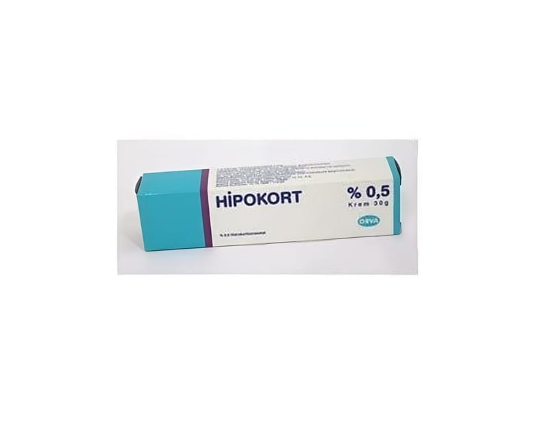

Hipokort %0.5 Krem 30 g

Ne için kullanılır
KT · Bölüm 1 HİPOKORT, haricen kullanıma yönelik bir kremdir. Zayıf etkili kortikosteroidler (grup I) olarak adlandırılan bir ilaç grubuna dahildir. Etkin madde olarak 100 gramında 0,5 g Hidrokortizon asetat ihtiva eder. HİPOKORT, ağzı plastik kapakla kapatılmış, 30 g beyaz renkli krem içeren alüminyum tüpte kullanıma sunulmaktadır. HİPOKORT; temas dermatiti (su-sabun gibi temizlik malzemeleri, kozmetikler, takılar vb. iritanlar ile temas sonucunda oluşan bir deri hastalığı), meslek egzaması (kişinin mesleği ile ilgili olarak günlük aktivitelerinde iritan ve alerjik maddelerle sıklıkla karşılaşması sonucunda gelişen bir deri hastalığı), nümmüler-dejeneratif egzama (kış aylarında görülen, bacak ve kalçalarda madeni para şeklinde doku hasarları oluşmasıyla belirgin alerjik nitelikte bir deri hastalığı) ve seboreik egzama (saçlı deride, burun ve dudak çevresi oluklarında, koltuk altı, meme altı kıvrımları veya kasıklarda kızarıklık, yağlı- sarı kepekli kabuklanma ve pullanma ile kendini gösteren iltihabi bir deri hastalığı), dishidrotik egzama (el ve ayak derileri üzerinde kaşıntılı kabarcıklar oluşması ile belirgin bir hastalık), variköz sendromda egzama (özellikle bacaklarda damarların genişlediği bölgelerde görülen bir deri hastalığı), çocuk egzaması, nörodermit (psikolojik sorunlar nedeniyle ortaya çıkan bir kaşıntı türü), anal egzama (makat bölgesinde görülen egzama), atopik dermatit (bazı alerjenlere karşı doğuştan veya sonradan aşırı duyarlılık sonucu gelişen, sulanma gösteren kırmızımsı renkte lezyonlarla belirgin kronik egzama), lichen ruber planus (özellikle kol ve bacak derileri üzerinde menekşe renginde küçük kabartılarla belirgin, bazen kaşıntı gösteren ve sebebi bilinmeyen bir deri hastalığı), psöriyazis (sedef hastalığı), böcek sokmaları, 1. derece yanıklar, güneş yanıkları gibi yerel tedaviye cevap veren alerjik ve iltihabi deri hastalıklarının tedavisinde kullanılır.